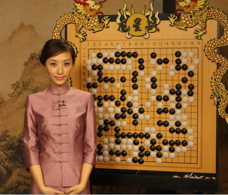
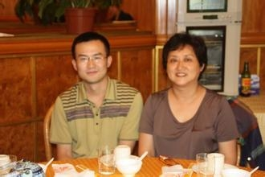
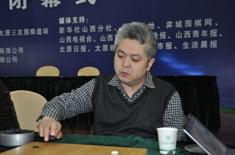
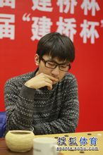
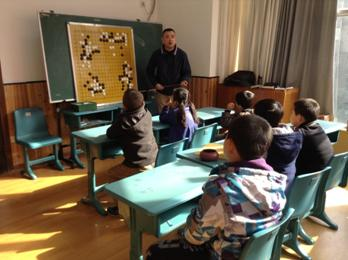
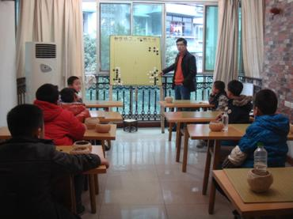
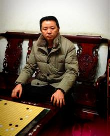
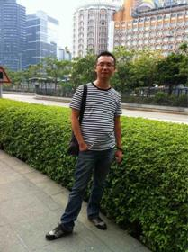

国家围棋专业四段，曾重庆棋院专业队员、围棋教练。14岁获世界业余第五名。1995年、1996年在四川省围棋比赛中荣获冠军；15岁参加全国围棋职业定段赛，定为专业初段，1997年开始从事围棋培训工作，1999年担任重庆围甲联赛的教练助理，2000年到黑龙江大庆市担任高级教练。2004年升为专业四段，同年被重庆大学学生会特聘为总教练。2005年重庆围棋甲级队队员。2010年获得重庆市运动会冠军。自从事围棋培训工作以来，为重庆培养了许多国家专业棋手和业余高段棋手。（其中学生董弈沛因定上专业初段，高考加分50分，2008年以总成绩704分被北京大学数学系录取）
国家围棋专业三段，曾重庆棋院专业队运动员、围棋教练。1992年获四川省青少年围棋赛第三名；1995年升为业余5段；
1996年和1997年连续两年获重庆市业余围棋冠军；
1998年参加“黄河杯”全国业余围棋锦标赛获第5名，升业余6段；
1999年获“TCL”杯全国业余围棋锦标赛获重庆赛区5―7段组冠军。1999年在专业棋手定段赛上9胜2负获第5名，提前两轮定为专业初段。2000年7月参加全国围棋升段赛升为专业二段。2000年曾在大连担任高级教练。2002年7月参加全国围棋升段赛升为专业三段。多次在重庆电视台围棋节目和围甲联赛主场担任主讲。2003年至2005年担任三届中国围棋甲级联赛重庆队成员，胜率50％，并获得过全国围棋甲级联赛团体冠军。2005年6月在全国“阿含桐山”杯中击败聂卫平九段，成为古力后又一为击败聂卫平的重庆本土选手。2007年获重庆市市运会冠军。
唐莉, 人称最美围棋国手，职业初段。6岁开始学棋； 1996年获得四川省第八届省运会女子组冠军。1998年成为职业初段，2003年退役进入复旦大学新闻系专业学习，希望报道北京奥运。曾担任多家电视台围棋节目主持人；其中有中央电视台、广东电视台、贵州电视台、中国棋文化峰会，天元围棋频道的主持

唐莉虽然不是中国围棋段位最高、棋力最强的女棋手，但她却是人气最高的女棋手。
韩晔，国家围棋职业四段。10岁定上职业初段，在2006年以前是最早定上职业段位的棋手。89年进入国家少年队，95年升到职业四段。

李魁，国家围棋职业三段。1992年定上职业初段，92年进入国家队。
赵文东，国家围棋职业二段。1988年定初段。1993年退役。1997年晚报杯第五，1998年晚报杯第一。升业余7段。1999年世界业余锦标赛第三。

韩晔、李魁、赵文东，97年离开国家队回到山西省围棋队开始教学，一起培养了10多名职业棋手和60多名业余5段以上棋手。其中男子最著名的棋手有党毅飞：2003年、2005年、2006年山西省围棋锦标赛冠军
2005年大韩生命杯世界儿童国手赛冠军
2006年华山大会暨全国业余棋王争霸赛冠军……
http://baike.baidu.com/picview/2320921/2320921/0/55a628d13f4ce45a9a502761.html

2009中国围棋甲级联赛13胜7负。
2010年第九届玉溪杯中国围棋西南王赛四强。
第一届全国智力运动会男子团体赛冠军成员。
第十届玉溪杯中国围棋西南王赛亚军。
第三届BC信用卡杯世界围棋公开赛32强。
女子棋手有王祥云：2005年全国围棋个人赛女子组冠军。
2005年第四届正官庄杯女子围棋擂台赛作为中国队先锋取得五连胜。
“学棋育人，益智的同时，提高孩子的综合素质与修养是我们每一位围棋老师努力的方向。”——韩晔、李魁、赵文东
李俊尧，重庆业余5段。6岁（88年）开始学棋，7岁进入重庆棋院学棋。跟王隽、岳嵩、唐莉等职业棋手是同班同学。14岁进入中信围棋少年队，现在的著名棋手谢赫九段刘星八段等一起在中信少年队进修。
主要成绩：97年获得晚报杯重庆赛区第2名。
田川辉，中国围棋协会会员，业余5段，目前主要分管西南医院幼儿园，三色幼儿园，沙坪坝区小学的围棋教学，承获2002林业杯冠军，沙区运动会围棋团体亚军等荣誉。
田川辉教练长期致力于幼儿围棋的普及和提高，寓教于乐。深受学生和家长的一致好评，所教小朋友在全市幼儿比赛中多次取得好成绩。

夏军辉2004年开始教学，先后培养出的学生中多次取得全国、市、区级比赛冠、亚军。多人取得由国家统一颁发的段位证书。本着兴趣就是最好的老师的原则，让孩子们在快乐中学习围棋，在快乐学习中感悟人生。培养的学生有：
刘逸凡 5段 国家二级运动员 2008年全国少年宫围棋比赛冠军多次 在重庆市少儿锦标赛中取得前三名
陈籽艺 5段 国家二级运动员
夏小钦 4段 国家二级运动员
2007年首届巴南区“体彩杯”儿童棋王赛A组亚军 、团体冠军成员
胥丁珂 4段 国家二级运动员
刘雨萌 4段 国家二级运动员
李亦可 4段 国家三级运动员
徐好奇 3段 国家三级运动员
刘世涵 3段 国家三级运动员
胡靛清 3段 国家三级运动员
以及多名取得初段、高级位的学生

周刚，业余5段棋手，热爱围棋，有多年的围棋教学经验。培养自己的儿子周宇轩5岁开始学棋，多次获得重庆市儿童围棋锦标赛前三名。学生王笑天：2012年荣获重庆市幼苗杯六岁组第四名，学棋时间一年。白浩廷：2013年荣获重庆市少儿围棋锦标赛七岁组冠军，学棋时间大半年。 温张欣翰：2013年五月荣获少儿围棋锦标赛高级组第一名，定上1段。学棋时间1年半。

方勇，业余5段棋手。曾多次获得重庆市围棋比赛前六名。2006、2007获得重庆市围棋优秀教练，培养出何泓孜、张延迪等一大批优秀少年业余5段。

本网站正在建设中, 部分功能未能开放, 感谢您的关注、支持与谅解.
弈之道 围棋道场